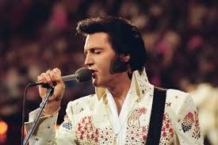

Merhaba, ben Elvis Presley.
Uzmanlık alanım: Rock and Roll, Blues ve Pop
Rock and Roll Kralının Dünyasına Hoş Geldiniz

Elvis Aaron Presley, 8 Ocak 1935'te Tupelo, Mississippi'de doğdu ve müzik tarihine "Rock and Roll'un Kralı" olarak geçti. Gençliğinde dinlediği blues, gospel and country müziklerini sentezleyerek tamamen yeni ve enerjik bir ses yarattı.
1950'lerde müstehcen bulunan ikonik kalça dansı ve karizmatik vokaliyle gençliği peşinden sürükledi, muhafazakar kesimi şoke etti. 60'lı yıllarda Hollywood filmlerinde boy göstererek bir sinema yıldızı oldu. 1968'deki efsanevi Comeback Special ile müziğe olan hakimiyetini tekrar kanıtladı.
70'lerde beyaz tulumları ve devasa Las Vegas şovlarıyla kültürel bir fenomene dönüştü. 16 Ağustos 1977'deki erken ölümü dünyayı yasa boğdu, ancak adı efsanelerin en üst sırasında kalmaya devam ediyor.
Dünyanın Rock and Roll ile tanıştığı, gençlerin çılgına döndüğü ve müzik tarihinin sonsuza dek değiştiği o ikonik patlama dönemi.
Ordudan döndükten sonra sesinin daha da olgunlaştığı, pop ve balad tarzı şarkılarla tüm dünyada listeleri altüst ettiği yıllar.
Hollywood yıllarının ardından köklerine dönerek, güçlü gospel ve soul etkileşimli muazzam kayıtlara imza attığı "Comeback" sonrası dönemi.
Dünya çapında uydudan canlı yayınlanan ilk solo konser. Tıklım tıklım dolu arenalar, ihtişamlı tulumlar (jumpsuits) ve görkemli orkestra performansları.
Irksal ayrımcılığın yüksek olduğu yıllarda, siyahi ritim ve blues müziğini beyazların country tarzıyla birleştirerek popüler müziğin yönünü tek başına değiştirdi.
Kariyerinin son dönemindeki Las Vegas performansları; pelerinleri, taşlı tulumları ve karate teklemeleriyle bugünün modern konser şovlarının temelini attı.
Televizyonun evlere yeni girdiği dönemde kameralarla oynama tarzı, Ed Sullivan Show görünümleri ve gişe rekorları kıran filmleriyle 20. yüzyılın en büyük idolü oldu.